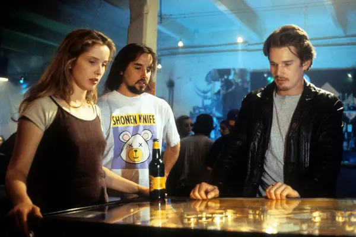
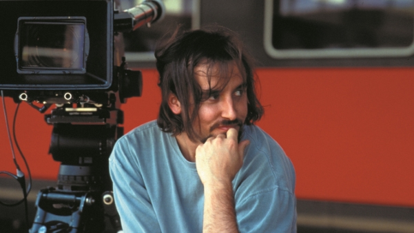

Richard Linklater nació en Houston, Texas, el 30 de julio de 1960. Como en su película ‘Boyhood’, sus padres se divorciaron cuando él tenía 7 años. Logró una beca deportiva para estudiar en la Universidad Estatal Sam Houston. Se matriculó en literatura inglesa pero pronto perdió el interés en la Academia y se puso a trabajar en una Plataforma Petrolera en el Golfo de México. Tras dos años ahorrando, se compró un pequeño equipo de cine y se mudó a Austin, donde fundó la Austin Film Society en 1983. Además de poner obras de sus admirados Ozu, Dreyer, Bresson o Godard, comenzó a hacer sus primeros trabajos. En 1988 realizó su primer largo, ‘It’s impossible to Learn to Plow by Reading Books’, dirigida, escrita, producida, editada, fotografíada y protagonizada por él mismo. ‘Slacker’ en 1990 y ‘Movida del 76’ en 1993 le convertirían en un referente del cine juvenil de los noventa. En 1995 llegaría ‘Antes de amanecer’, la primera parte de su aclamada trilogía. También experimentó con la animación en ‘Waking Life’ (2001), ‘A Scanner Darkly’ (2006) y la reciente ‘Apolo 10½: Una infancia espacial’ (2022), realizaría documentales como ‘Fast Food Nation’ y películas más desenfadadas como ‘Escuela de Rock’ (2003). De pasos poco predecibles, su gran recibimiento crítico llegaría tras ‘Antes del anocecher’(2013) y ‘Boyhood’ (2014), obras que le colocaron definitivamente como uno de los cineastas americanos de referencia. Ha estado nominado a 5 Oscar y, aunque no ganó ninguno, sí que se alzó con 2 Globos de Oro y 2 BAFTA por ‘Boyhood’. Tanto esta última como ‘Antes de amanecer’ le depararon el Premio a Mejor Director en el Festival de Berlín.
“El rechazo definitivo a la estructura de Hollywood es ver el tiempo pasar”. Esa frase que enuncia Linklater en los extras del DVD de ‘La última bandera’ podría resumir su forma de hacer y ver el cine. Mientras en el cine clásico la imagen estaba ligada a la acción, al movimiento, Linklater es el mayor ejemplo de modernidad en el uso del tiempo. El fluir errante de la narración en Linklater crea una enorme sensación de sinceridad, de vida, de alguien que está mucho más preocupado por capturar un instante real que por contar una historia emocionante con principio y final. Con esta premisa, Linklater ha conseguido desarrollar una carrera tan exitosa como irregular, pero manteniéndose siempre en su margen, sin ser absorbido por una industria en la que no encajaría, pero levantando cada proyecto. A pesar de su prolífica carrera, sigue viviendo en Austin y se niega a permanecer o trabajar en Hollywood. Linklater es un autor capaz de rodar una película durante doce años o de esperar 9 entre una parte de una trilogía y otra. Ignorando cualquier regla productiva, del mercado o de las presiones por las expectativas creadas, Linklater es de los pocos cineastas que parece abordar cada proyecto con la ilusión desnuda de quien hace su primera (y quizás última) película.
